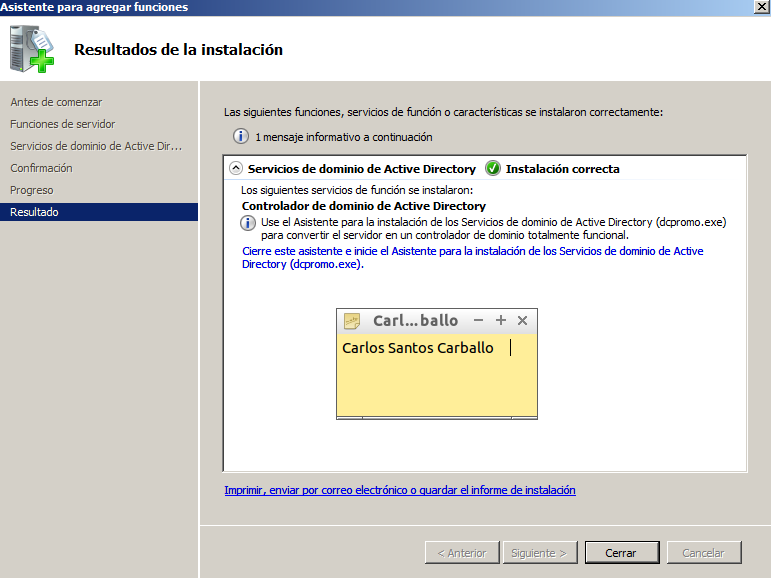
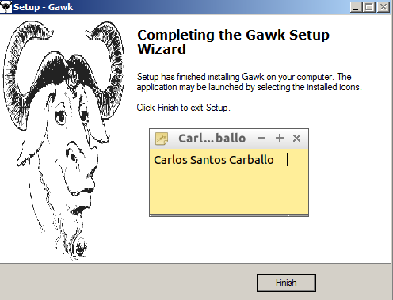
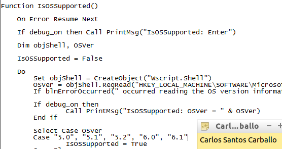
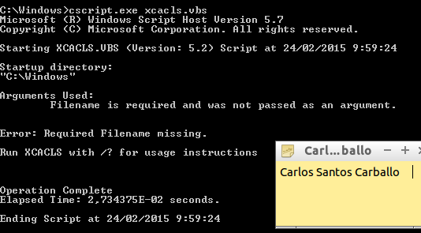
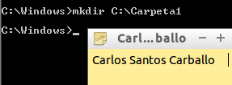
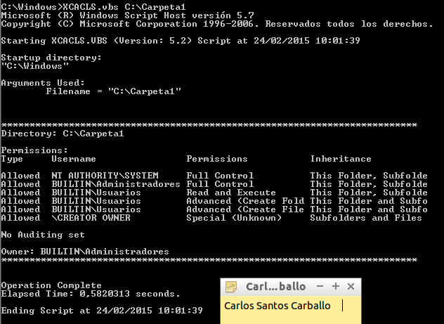
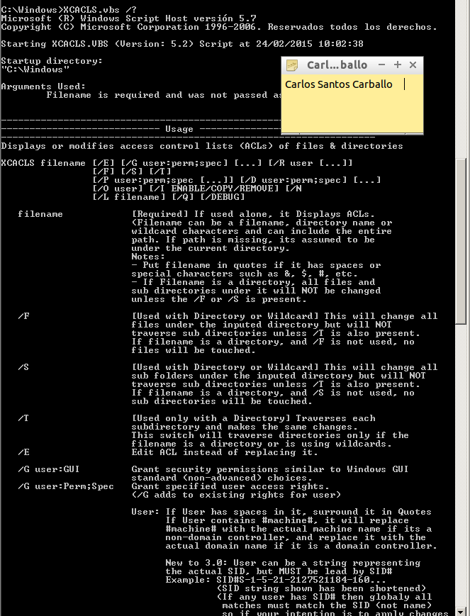
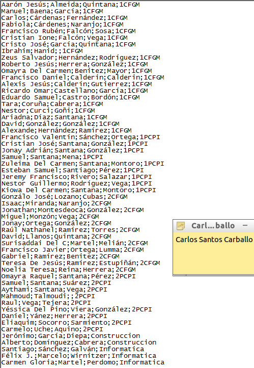
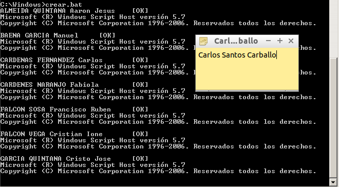

- Módulo: Sistemas Operativos
- Título del trabajo Generación de usuarios
- Componentes del grupo: Carlos Santos Carballo
- Curso Académico: 2014/2015
- Fecha de entrega: 1 de Marzo de 2015
Para llevar a cabo esta práctica necesitaremos utilizar un Windows Server 2008 teniendo en él instalado previamente el Active Directory, tener descargardo el script XCACLS.vbs, debemos descargar el software gawk y por último el ejecutable cscript.exe que lo podemos descargar de manera muy sencilla en la web.

Como primer paso debemos descargar e instalar el software gawk, la instalación que realizaremos será una instalación predeterminada.

Si queremos asegurarnos de que podamos ejecutarlo desde cualquier directorio del sistema de ficheros del Windows, deberíamos ir a la ruta Inicio > Equipo > Propiedades > Opciones avanzadas > Variables de entorno y establecer la variable de entorno %PATH% añadiendole la siguiente ruta "C:\Program Files\GnuWIN32\bin;".

Ahora descargaremos el script XCACLS.vbs. XCACLS.vbs es un script que nos permite, ver, modificar y eliminar permisos NTFS en Windows. Una vez descargado los extraeremos en la ruta C:\Windows. Buscaremos la función "IsOsSupported()" y la etidaremos para que soporte la versión 6.0 (Windows Server 2008) y 6.1 (Windows Server 2008 R2), para ello editaremos el script con un editor de textos plano.

Luego cambiaremos el motor de secuencias de comandos predeterminado, de WSCRIPT a CSCRIPT, esto se debe a que XCACLS.vbs trabaja mejor con cscript. Así que escribiremos el siguiente comando en Ejecutar: "cscript.exe /h:cscript". Para esto tenemos que descargar previamente el cscript.exe

Para utilizar el script, debemos abrir una nueva consola de línea de comandos (cmd) e ir hasta el directorio C:\WINDOWS.

Creamos la carpeta "Carpeta1" en la ruta C:\WINDOWS.

Vemos los permisos NTFS predeterminados para esa carpeta

Lo que necesitamos ahora, es ver el manual de ayuda que trae XCACLS.vbs, para eso escribiremos lo siguiente

A continuación crearemos una nueva unidad organizativa en active directory llamada "Formación profesional" ya que en los ficheros que crearemos a continuación introduciremos el nombre de dominio y la unidad organizativa donde que queremos que se crean los usuarios

Ahora debemos generar dos ficheros, uno lo llamaremos "usuarios.csv" que contiene 4 campos: nombre;apellido1;apellido2;grupo


Con estos dos ficheros podemos crear un tercero "crear.bat" uqe finalmente ejecutaremos. Para crearlo ejecutaremos el siguiente comando "awk f alta.awk usuarios.csv"
En mi caso los tres ficheros los puse en la siguiente ruta porque sino no me funcionaba el comando para generar el crear.bat

Ahora para ejecutarlo tan solo basta con poner el nombre del fichero en la consola de comandos.

Finalmente, revisaremos si se nos ha creado todos los usuarios y grupos correctamente.